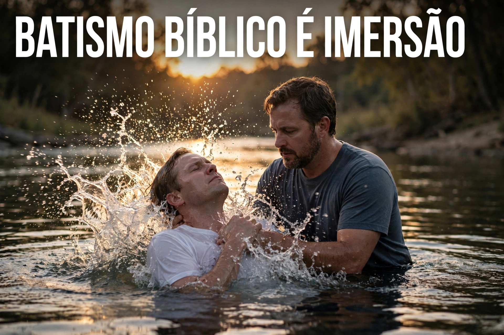

Para compreendermos a extensão do desvio doutrinário que tomou conta de grande parte do cenário eclesiástico contemporâneo, é imprescindível regressar às fontes originais do texto sagrado. O vocábulo empregado no Novo Testamento para designar a ordenança do batismo é o termo grego baptizō (βαπτίζω), derivado de baptō. Em toda a literatura clássica grega, bem como na Septuaginta e nos escritos neotestamentários, esta palavra carrega um significado único, inequívoco e imutável: submergir, mergulhar completamente, imergir ou afundar em um elemento líquido.
Não há na semântica da língua grega primitiva qualquer margem para associar baptizō a simples borrifos ou derramamentos de gotas de água. Quando os autores sagrados quiseram se referir à aspersão, utilizaram o termo rhantizō (ῥαντίζω); quando desejaram mencionar o derramamento, empregaram cheō (χέω). No entanto, ao instituir o sacramento da entrada na aliança do Evangelho, o Espírito Santo inspirou rigorosamente o uso de baptizō — exigindo a imersão total do corpo.
O batismo genuíno e ordenado por Jesus Cristo possui uma fórmula trinitária clara, inviolável e categórica, proferida no encerramento de Seu ministério terreno:
"Portanto ide, fazei discípulos de todas as nações, batizando-os em nome do Pai, e do Filho, e do Espírito Santo."
— Mateus 28:19
Esta ordenança não representa um mero ritual formal, mas sim a manifestação pública e exterior de uma transformação interior prévia. O batismo simboliza de forma límpida a união do crente com Cristo na Sua morte, sepultamento e ressurreição. Como declara o apóstolo Paulo:
"Ou não sabeis que todos quantos fomos batizados em Jesus Cristo fomos batizados na sua morte? De sorte que fomos sepultados com ele pelo batismo na morte; para que, como Cristo ressuscitou dentre os mortos, pela glória do Pai, assim andemos nós também em novidade de vida."
— Romanos 6:3-4
Ao examinarmos o registro narrativo do Novo Testamento, a exigência de grandes volumes de água para a realização da imersão fica explicitada em múltiplos cenários. João Batista não escolhia locais aleatórios; ele buscava regiões com abundância hídrica capaz de cobrir o corpo dos penitentes:
"Ora, João batizava também em Enom, perto de Salim, porque havia ali muitas águas; e vinham ali, e eram batizados."
— João 3:23
O próprio batismo do Nosso Senhor Jesus Cristo, ministrado por João no Rio Jordão, deixa evidente o ato físico de entrar e sair de dentro da água. O evangelista Mateus registra com precisão: "E, batizado Jesus, saiu logo da água..." (Mateus 3:16). Se o batismo fosse por aspersão de algumas poucas gotas, não haveria necessidade alguma de Jesus ou de João entrarem no leito do rio.
Esta mesma dinâmica é observada na evangelização do eunuco etíope por Filipe, em Atos dos Apóstolos. Diante da confissão de fé do oficial, ambos desceram juntos ao elemento hídrico:
"E mandou parar o carro, e desceram ambos à água, tanto Filipe como o eunuco, e o batizou. E, quando saíram da água, o Espírito do Senhor raptou a Filipe, e não o viu mais o eunuco; e, jubiloso, continuou o seu caminho."
— Atos 8:38-39
Para além das páginas do texto sagrado, a arqueologia bíblica oferece um testemunho irrefutável sobre a prática da imersão no Primeiro Século. As escavações efetuadas no entorno do Templo de Jerusalém, nas ruínas de Qumran e nas cidades greco-romanas do primeiro século revelaram centenas de tanques rituais judaicos, conhecidos como mikvaot (מִקְוָאות). Estas estruturas eram munidas de degraus para que a pessoa descesse completamente até cobrir a cabeça na água viva.
As ruínas das primeiras basílicas cristãs construídas entre os séculos II e IV d.C. — como as encontradas na antiga cidade de Éfeso, em Roma, em Cartago e na região da Síria — abrigam batistérios monumentais profundos (baptisteria), escavados no chão sob a forma de piscinas octogonais ou em cruz, projetados exclusivamente para a imersão completa de adultos.
Se a Bíblia e a arqueologia confirmam categoricamente a imersão consciente e voluntária como o único padrão apostólico, quando e como surgiram as práticas do batismo por aspersão (pedobatismo ou infusão) e o batismo de recém-nascidos? Escavando os documentos históricos da igreja, encontramos a linha do tempo das alterações humanas sobre a ordenança divina:
A) O Surgimento do Batismo dos Enfermos (Clinicos) — Ano 251 d.C.:
A primeira menção histórica documentada de um batismo realizado sem imersão ocorreu meados do século III. No ano de 251 d.C., o bispo Novaciano de Roma encontrava-se gravemente enfermo em seu leito de morte. Receando morrer sem o ritual, foi-lhe derramada água sobre a cabeça no próprio leito. Esta prática incomum recebeu o nome de "batismo dos clínicos" (de kline, leito). Naquela época, o bispo Cipriano de Cartago defendeu que, em casos excepcionais de extrema urgência e risco de morte, a infusão seria tolerada. No entanto, a própria igreja da época via essa concessão com profundas reservas, a ponto de os cânones eclesiásticos proibirem que homens batizados em leito de enfermidade fossem ordenados ao presbitério.
B) A Origem do Batismo Infantil — Séculos III e V d.C.:
Durante os dois primeiros séculos, não existe um único registro histórico ou textual de batismo de recém-nascidos. O batismo exigia obrigatoriamente fé consciente e arrependimento prévio (Marcos 16:16; Atos 2:38). Foi no Concílio de Cartago (ano 253 d.C.) , sob a liderança de Cipriano, que se começou a recomendar o batismo de crianças recém-nascidas, movido pela falsa crença germinada de que a água batismal possuía eficácia mágica para regenerar e apagar a culpa do pecado original.
A consolidação definitiva dessa aberração doutrinária deu-se com Teodósio I através do Édito de Tessalônica (ano 380 d.C.) , que declarou o cristianismo como a religião estatal obrigatória do Império Romano, e posteriormente pelas teses formuladas no Concílio de Milevo (ano 416 d.C.) , que anematizou categoricamente todos aqueles que negassem o batismo aos recém-nascidos. A partir desse momento, o batismo deixou de ser uma decisão individual de fé consciente para se transformar em uma ferramenta estatal de registro civil, controle demográfico e arrecadação eclesiástica.
C) A Oficialização do Batismo por Aspersão — Ano 1311 d.C.:
Durante mais de mil anos, a despeito do desvio do batismo infantil, a Igreja no Ocidente ainda mantinha a imersão como o método primário. A mudança radical e formal da imersão para a mera aspersão (borrifo de água) como regra geral ocorreu apenas no Concílio de Ravena, no ano de 1311 d.C.. Neste concílio, a Igreja Católica Romana declarou oficialmente que o batismo por aspersão ou infusão era livremente intercambiável com a imersão, curvando-se à conveniência do clima frio da Europa Ocidental e abolindo de vez o significado bíblico do sepultamento do velho homem.
O topo da corrupção litúrgica eclesiástica manifesta-se quando denominações e sistemas religiosos submetem ao batismo indivíduos que sequer experimentaram o novo nascimento, a libertação do pecado ou o verdadeiro arrependimento. No texto sagrado, a exigência prévia ao batismo é indiscutível: "Quem crer e for batizado será salvo; mas quem não crer será condenado" (Marcos 16:16).
Quando uma denominação conduz às águas pessoas amasiadas, embriagadas no secularismo, presas a práticas ocultistas, sem frutos de arrependimento (Mateus 3:8) ou compelidas por mera pressão social e familiar, ela comete um sacrilégio contra a santidade do Evangelho. Transforma uma ordenança santa em um mero ritual social sem poder de salvação, gerando membros nominalmente "cristãos", porém espiritualmente mortos.
E aí? Sua Igreja exerce o Batismo Bíblico?